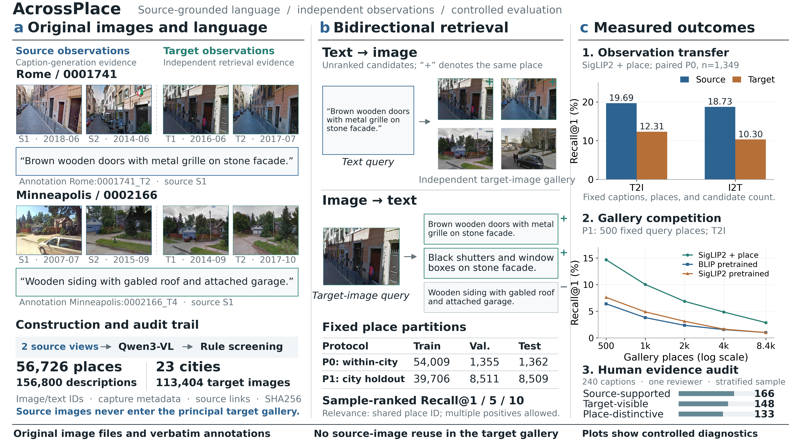

Construct & trace
Qwen3-VL descriptions, source-image provenance, rule-based filtering and image-identity audits.
Source ∩ target = ∅A benchmark that asks vision–language models to recognize place identity beyond the images that supplied their descriptions.
Descriptions come from designated source views. Retrieval uses separate target views of the same place. Relevance follows place identity, with multiple valid matches in both directions.
Qwen3-VL descriptions, source-image provenance, rule-based filtering and image-identity audits.
Source ∩ target = ∅Fixed place partitions, query/gallery manifests, pretrained and place-supervised baselines.
P0 within-city / P1 held-out citiesT2I and I2T Recall@1/5/10, gallery scaling, cross-view transfer and human quality review.
Sample-ranked, place-relevant
Inspect unmodified street-view images and exact generated descriptions. Source views explain where the language came from; independent targets show what retrieval must recognize.
“Rule-valid” is an automated filter status, not a guarantee of factual correctness. These are illustrative examples, not a random sample.
Compare fixed test-set results across pretrained and adapted models. Scores below use the archived evaluation, not live inference.
| Baseline | Text → Image | Image → Text | Training seeds |
|---|
Mean ± sample SD across three training seeds for adapted models; pretrained weights are evaluated once. Blank cells indicate an unreported variant. Common three-epoch training budget. P0 and P1 also differ in training size, queries and gallery size; their gap does not isolate a causal city effect.
Fixed 500 query places, nested candidate galleries. Three curves show archived coarse T2I Recall@1 on P1; this controlled diagnostic differs from the main benchmark table.
Replay real top-1 predictions from the P1 human diagnostic. Compare three fixed models on the same query. The supervised model here is SigLIP2 seed 42, not the strongest BLIP+MS baseline.
12 curated success/failure examples, selected after evaluation. T2I uses 17,014 target images. I2T uses a controlled 8,509-caption gallery and displays the first target view. Place IDs determine hits; a hit does not certify every detail in a description.
Run your own query locally ↗Data construction, fixed protocols, baseline training, testing and diagnostic analysis — together in one repository.
# Install the retrieval environment
git clone https://github.com/CV4RA/AcrossPlace.git
cd AcrossPlace
pip install -e ".[dev]"
# Verify formal metadata and images
place-retrieval verify-data \
--config configs/gsv_full.yaml --check-images
# Train → select on validation → test
place-retrieval run --config configs/gsv_full.yaml